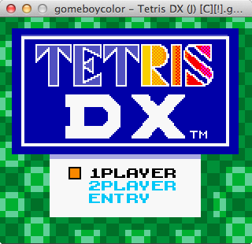
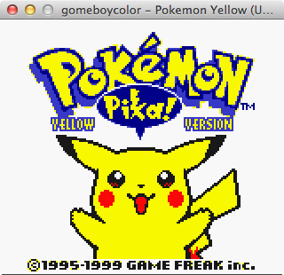
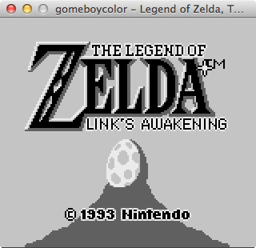

“Yet another emulator?”
There is no point beating around the bush, people have written Gameboy emulators before with great success, however I’ve always been curious as to how they are done. This project was set up as a learning exercise to help me understand how the basic principles of how computers function at the lowest level and how you can simulate them in software.
Since then it’s become my side project and I feel I’m at a point where I can share it with the world.
Features
- Cross platform support for 64-bit Windows, Linux and OSX operating systems, binaries available here
- Supports most† of the traditional black and white Gameboy ROMs
- Supports most† Gameboy Color ROMs with colour support‡ (and black and white mode for supported GBC titles if desired)
- Battery saves facility, with compressed save files for lightweight storage
- Six screen resolutions
- Passes all blargg CPU instruction and instruction timing tests
- Delightful emulation of the scrolling Nintendo “boot screen” when you load the emulator up (can be disabled)
† This project is still under active development so there will inevitably be ROMs out there that don’t work (yet) or have bugs. For a full list of tested games, click here
‡ Gameboy Color features are mostly done but there are a few outstanding tasks remaining
Screenies
- 
-

-

-

- 
- 
About
The emulator is written entirely in go. Why? It’s fast, it’s fun to code in, has great tooling and is really simple to pick up. It also has a history of people writing emulators in, maybe it’s the next “Hello World”?
I started working on this after reading Code: The Hidden Language of Computer Hardware and Software by Charles Petzold, a delightful read that takes you through the history of how computers came to be and how they function, right from the days of telegraph relays to the modern transistor. This book inspired me to investigate further and what better way to do it than writing your own computer? Well, technically it’s Nintendo’s computer, implemented in software.
People have often asked me how challenging it is to actually write an emulator that works, and as it turns out, it really isn’t that difficult. However, it’s immensely frustrating, baffling, tedious, anger inducing, soul crushing, boring, exciting, challenging and thankfully hugely rewarding. A journey of highs and lows with sometimes very little to show for it, but as soon as all the pieces start to fall into place and you see your software boot into its own environment all by itself, a small bubble of pride makes it all worthwhile.
The project is open sourced under the MIT license, details of which you can view here.
Roadmap
- Sound. I’ve been putting this off for quite some time but as I get nearer to feature complete status, this is the next priority (see #10)
- More game support. Memory bank controller MBC2 is currently unsupported, along with a few other cartridge types
- GUI based launcher with ROM and RAM saves administration (see #35)